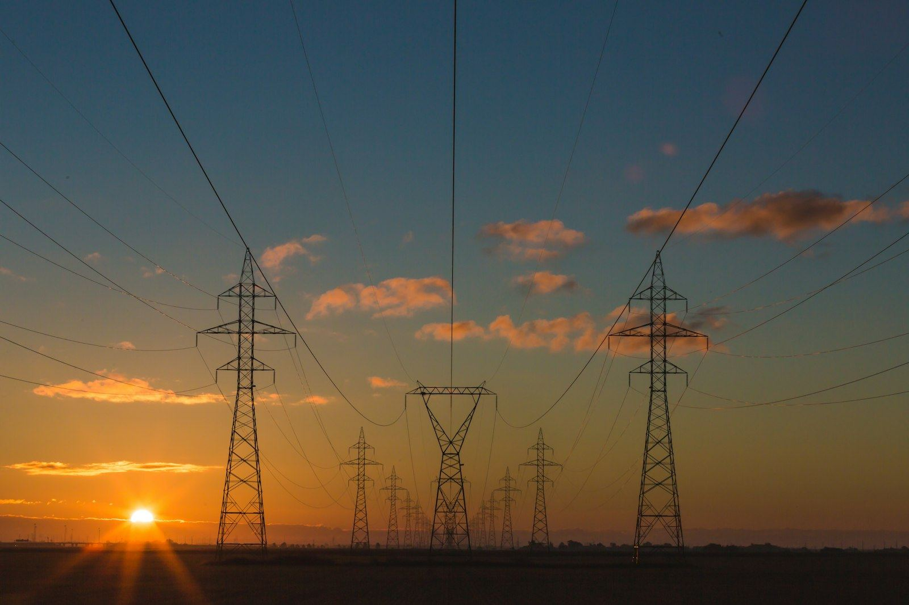

Projects · 01 Project Ironbark · 02 Track record
A gigawatt of energisable land, in the right city, with the power question already answered.
Project Ironbark is QORINAI's flagship AI campus: a single greenfield freehold beside a 500 kV transmission corridor in one of Australia's fastest-growing data-centre markets, with a formal 1,000 MW connection response from the state's transmission planner already in hand. We are inviting energy, equipment and infrastructure partners to join before the planning application — the point at which a feasible site becomes an approved one.
The thesis
Australia has no shortage of planned data centres. It has a shortage of energisable land. This project ran the power process first.
- 01 · SCARCITYClose to unrepeatable
A gigawatt-scale, transmission-assessed greenfield site inside a capital city, beside a vacant 500 kV easement. The planner supports only one new shared terminal station per radius — the first proponent to lock a location becomes the hub others must connect to.
- 02 · DE-RISKEDThe authorities have already answered
Grid, gas, water, sewer, stormwater, communications and planning have all responded: every service is confirmed feasible. The technical and regulatory groundwork that usually takes a developer years is done.
- 03 · SCALEFirst-tier by any Australian measure
At 1 GW the masterplan is larger than every grid-connected campus under construction in the country today, and the only one with gas firming and grid-forming storage designed in rather than diesel standby bolted on.
- 04 · REPEATABLEOne module, four times
Each 250 MW block is sized to sit inside the grid's contingency limit and staged-load profile. Every repeat uses the same engineering, the same approvals and the same supply chain — execution risk falls with each module.
- 05 · RE-RATINGAn asset that steps up at every milestone
Freehold land held outright. Planning approval and a locked connection location turn a greenfield into powered land; connection agreements make the 1 GW pathway contractual; first energisation makes it an operating platform.
- 06 · DEMANDSovereign compute the market cannot source
Hyperscalers, AI labs and government workloads need Australian-hosted, liquid-cooled GPU capacity at scale. Long-run capacity in a metropolitan corridor is what the largest tenants are competing for.
Market context
The gap is power, not demand.
The largest AI operators are building 1 GW+ campuses — and every one of them is a power project first, with on-site generation bridging the grid.
The planner's, market operator's and network's documents are public and verifiable. Entry cost is an order of magnitude below North American campuses, with OECD-grade regulation.
Global cloud operators and Australia's largest developers are all committed to the same northern growth corridor. This site sits closer to the city than the corridor's largest announced parcel.
The formal connection response is valid for a fixed window. Entering before the planning application captures the step from "feasible" to "approved".
What is already done
Five modules of infrastructure and commercial planning, delivered.
- Masterplan design
Whole-of-site spatial plan with a 1 GW IT end-state, delivered as a repeatable 250 MW module fed from a new 500 kV terminal station.
- Grid connection & feasibility
Formal confirmation that a 1,000 MW connection is technically feasible; connection blueprint, contingency limit and system-strength figures quantified.
- Energy & microgrid
Gas firming plan and pipeline scoped with the network; grid-forming battery storage for stability and self-sufficiency.
- Land, environment & utilities
Zoning and overlays established; water, sewer and stormwater positions mapped; carrier lead-ins confirmed at the boundary.
- Commercial baseline
Current-use valuation, module cost and lease-revenue model completed — available in the data room under NDA.
Ways to participate
Four structures that can be combined.
Hard, quantified needs
System strength, a contingency limit, power-factor and reactive limits, interruptible-load duties — written into the transmission response. Storage and power electronics are engineering requirements here, not a sustainability add-on.
One accountable operator
QORINAI develops, builds and operates the whole chain — land and power, design, hardware through our strategic shareholder Hyperscalers, cluster deployment, 24×7 GPU operations and a sovereign cloud. One team from the substation to the token.
Naming and showcase rights
Energy-system naming, an on-site demonstration centre and joint authorship through the connection application — a flagship overseas reference case for a partner's technology.
How to engage
From first call to term sheet in about ten weeks.
Email finance@qorinai.ai with your organisation and area of interest. We reply within one business day.
Mutual NDA, then the full investment teaser: site identification, the formal grid response, valuations and the module economics.
Existing Infrastructure Review, authority responses, surveys and models. A joint technical workshop on storage sizing, the system-strength election and gas–battery coordination.
Agree the participation structure (A–D or a combination) and sign a term sheet ahead of the connection application and planning lodgement.
Where exactly is the site?
In Melbourne's northern growth corridor, Victoria, beside a 500 kV transmission line. The exact parcel, survey and aerials are disclosed under NDA.
What is the size of the investment?
Structures range from a showcase-anchor commitment to development-stage equity in the project company. Budgets, valuations and returns are set out in the teaser and data room under NDA.
Is the power actually approved?
The transmission planner has issued a formal Connection Enquiry Response under the National Electricity Rules confirming a 1,000 MW connection is technically feasible and defining the pathway. The next steps — connection application, Use of System and Connection Services Agreements — are what the partnership funds.
Who is behind the project?
QORINAI Pty Ltd, an Australian AI data-centre developer and operator headquartered in Sydney, backed by strategic shareholder Hyperscalers, Australia's open-OEM server manufacturer. Our delivery partners have built and operated high-density compute in Australia since 2008.
What is the timeline?
About 36 months from application to first energisation: roughly 14 months to construction approval, then 22 months to build the 500 kV terminal station, storage and the first 250 MW building — inside the planner's indicative commissioning window.
Important notice. This page is for preliminary information only and is not an offer, investment advice or a commitment of any kind. The Connection Enquiry Response is a preliminary assessment under NER clause 5.3.3, not an agreement to augment the Declared Shared Network. Responses from network and utility operators are preliminary, indicative and non-binding. Site identification, commercial terms, budgets, valuations and returns are available under NDA only. "Project Ironbark" is a working name.

Projects · 02 Track record
Built in Australia, by the teams that now build for QORINAI.
QORINAI is a new company with an experienced bench. Its delivery partners and engineering leads have designed, built and operated high-density compute across New South Wales and Victoria since 2008 — modular sites beside power stations, inner-city colocation, liquid-cooled GPU clusters and a ~14 MW high-density build.
Track record · Capability timeline
From inner-city colocation to liquid-cooled GPU — and now gigawatt campuses.
- 2008
Inner-city colocation opens
100 racks, N+1, dark-fibre ring — still operating.
- 2014
Open-OEM manufacturing
Our strategic shareholder begins building servers in Canberra.
- 2021–22
Modular site beside a power station
8 × 2.5 MW modules, 1.9 → 20 MW staged in five months.
- 2022
~14 MW high-density build
Largest single build in the portfolio; direct utility coordination.
- 2025–26
1 MW liquid-cooled GPU cluster
Owner-funded, no master EPC, PUE < 1.10 pod design.
- 2026
GW-class campus masterplan
QORINAI's own programme: power first, three supply layers.
Partner-delivered projects
Four projects, four links of the chain.
Each project covers a different capability — grid connection, modular speed, continuous operations, liquid-cooled owner-managed delivery — and the same people carry across all four.
~14 MW high-density facility, Greater Sydney
Delivered by a QORINAI delivery partner · largest single build in the partner's portfolio
A purpose-built high-density compute facility in Greater Sydney's north-west, energised through direct coordination with the distribution network operator in one of the most connection-constrained regions in Australia. Custom high-airflow cooling, per-customer VLAN isolation and layered physical security — facial recognition, thermal imaging, MAC-registered fibre access.
- CapabilityGrid connection execution at > 10 MW in a constrained network; high-density electrical distribution
- CoolingCustom > 1,000,000 CFM system, 4–12 °C hall temperature with fan-failure headroom
- SecurityFacial recognition + thermal imaging; hosted fibre with MAC registration; per-tenant VLAN and remote management
- Operations24 h customer access with resident engineers
~11 MW modular site beside a renewable power station, Northern NSW
Delivered by a QORINAI delivery partner for a listed asset owner · behind-the-meter, 100 % renewable
Eight transportable 2.5 MW modular data centres installed on land adjoining a 30 MW biomass power station, supplied behind the meter under a seven-year take-or-pay electricity agreement. The first module was energised three days after signing; the staged plan reached the 20 MW maximum transfer capacity in five months, with ~11 MW built and energised by the team. The modules were later relocated overseas and continue to operate — proof that the design is genuinely redeployable.
- CapabilityRapid regional site development; modular delivery; owner-built connection infrastructure
- EnergyBehind-the-meter supply from a certified-renewable generator; load able to flex against midday solar surplus
- CommercialTake-or-pay structure, minimum-load thresholds, liquidated damages — the same shape as a GPU hosting contract
- LineageThe module design principles carry directly into today's 2.5 MW pod product
Inner-city colocation facility, Sydney
Operated by a QORINAI delivery partner since 2008 · commercial colocation, connectivity and infrastructure
A 100-rack colocation facility one train stop from the Sydney CBD, opened in 2008 and still operating: N+1 power and air-conditioning, a redundant dark-fibre ring to every major Sydney data centre and peering point, private cages, business suites and remote hands under ISO 27001 controls.
- CapabilityMulti-tenant operations in a constrained inner-city building; long-run reliability, not one-off construction
- ConnectivityRedundant dark-fibre ring; direct connection to any cloud, transit or IaaS provider in the metro
- ComplianceISO 27001 operations; Australian-owned, Australian-staffed
1 MW liquid-cooled GPU cluster, Sydney north shore
Delivered by a QORINAI delivery partner on its own balance sheet · no master EPC
A 1 MW high-density GPU cluster in an owner-occupied industrial building, delivered by directly engaging electrical, mechanical / liquid-cooling, cabling and compliance subcontractors — no master EPC, no interface margin. The build fed the partner's modular pod product line: sealed high-security pods with heat, EMF and noise capture, tested below 1.10 PUE, and a patent-pending waste-heat reuse system.
- CapabilityOwner-managed subcontracting; direct-to-chip liquid cooling at > 100 kW per rack
- NetworkSecond NSW distribution network connected to — the team has worked with both metropolitan operators
- ProductModular pod, DCIM / remote monitoring stack, waste-heat reuse — the engineering basis for QORINAI's Tier C halls
Power first. Then the campus.
Teaser, data room and technical workshop for qualified energy, equipment and infrastructure partners.
✉ finance@qorinai.ai